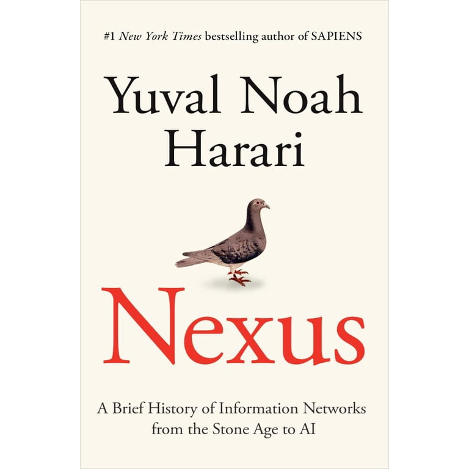
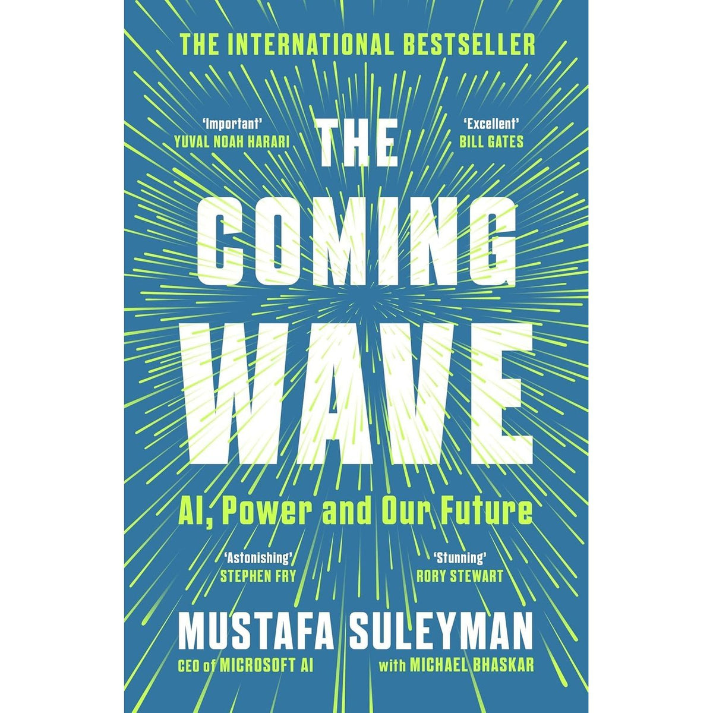
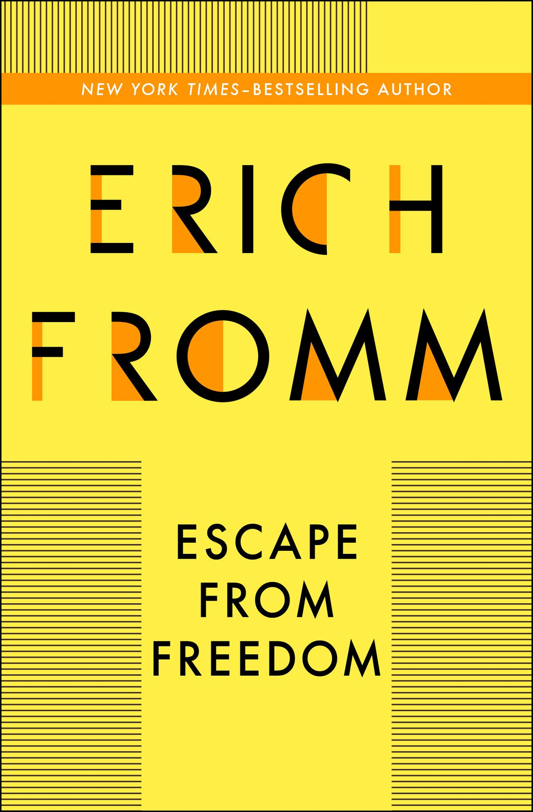
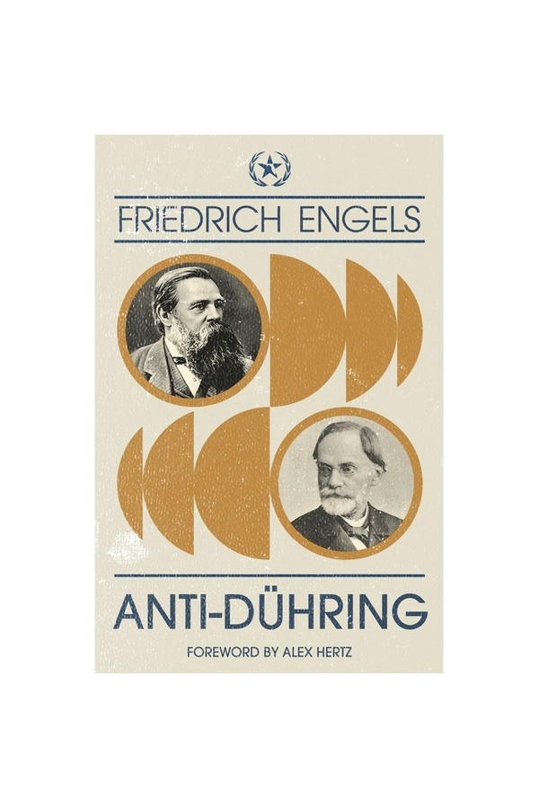

말하지 않고 말하기
ALADIN ↗It made me think again about how much of communication takes place beyond words.
Silence, gesture, and rhythm can sometimes speak more clearly than speech.
It made me think again about how much of communication takes place beyond words.
Silence, gesture, and rhythm can sometimes speak more clearly than speech.
AI is not merely a tool for innovation. It may transform the method by which innovation itself is produced.

It widened my view of AI from intelligence alone to the information networks through which societies and civilizations are organized.
This paper helped me see innovation as a search through a vast space of possible combinations—and AI as a means of deciding where to search first.

Its central dilemma—the diffusion of powerful technology and the difficulty of containing it—became an important counterpoint to my thinking about AI infrastructure.

Freedom does not only release desire. It also creates anxiety, responsibility, and the temptation to surrender one’s own judgment.

More than its conclusions, what has stayed with me is its way of seeing things not as isolated states, but as processes transformed through relationships and contradictions.